Изучение размещения посты на сайте.
Я запускаю hugo в каталоге ~/work/blog/, чтобы начать создание сайта:
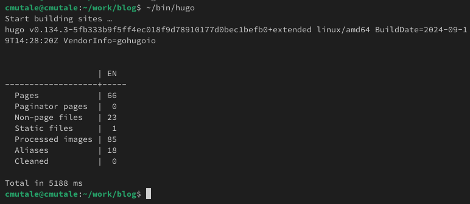
Рис. 1: Запуск hugo
Запускаю hugo server, чтобы получить локальный хост-сайт, где я могу видеть вносимые мной изменения:
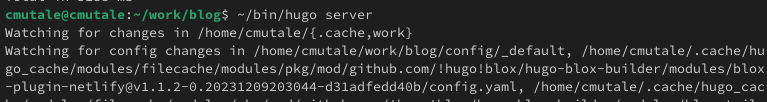
Рис. 2: Запуск hugo server
Для того, чтобы добавить фотографию на сайта я перехожу в каталог ~/work/blog/content/author:
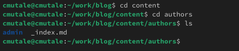
Рис. 3: ~/work/blog/content/author
Заменяю avatar.jpg на свою фотографию и она устанавливается автоматический:
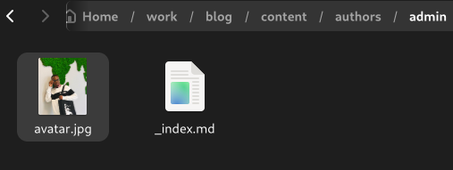
Рис. 4: Замена фотографии
Далее с помощью gedit я редактирую файл index.md, который ноходится в ~/work/blog/content/author и добавляю свою краткую биографию:
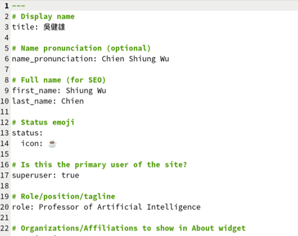
Рис. 5: Файл с информацией владельца
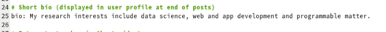
Рис. 6: Краткая биография
Проверяю изменении на сайте:
Рис. 7: Проверка на сайте
Также изменяю информацию об интересах:
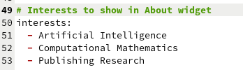
Рис. 8: Интересы
Также изменяю информацию об образовании:
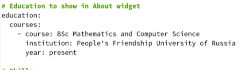
Рис. 9: Образование
Я перехожу в катклог ~/work/blog/content/post и создаю новую папку. Создаю файл index.md и вставляю фотографию featured.jpg:
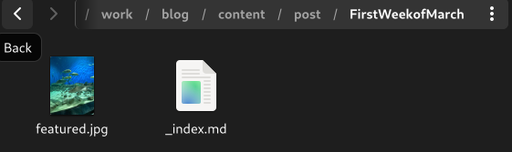
Рис. 10: ~/work/blog/content/post/FirstWeekofMarch
Я редактирую файл и добавляю информацию по прошедшей неделе:
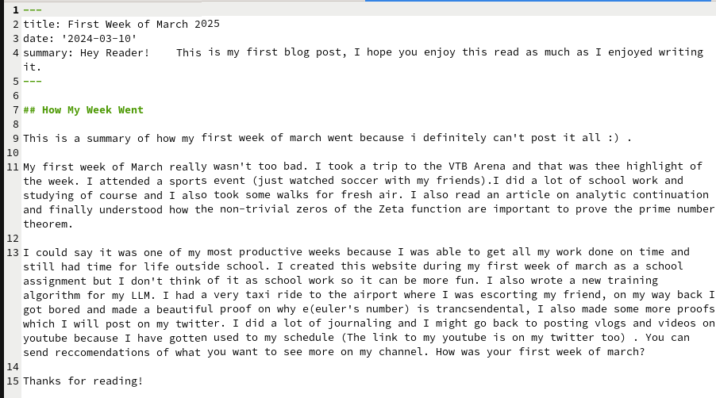
Рис. 11: Пост по прошедшей неделе
Создаю ещё одну новую папку в ~/work/blog/content/post. Создаю файл index.md и вставляю фотографию featured.jpg:
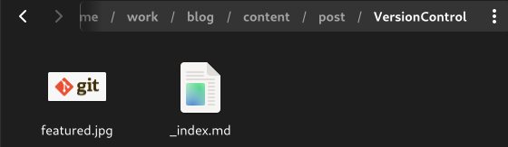
Рис. 12: ~/work/blog/content/post/VersionControl
Я редактирую файл и добавляю информацию об управлении версиями GIT (Что это такое и как работает):
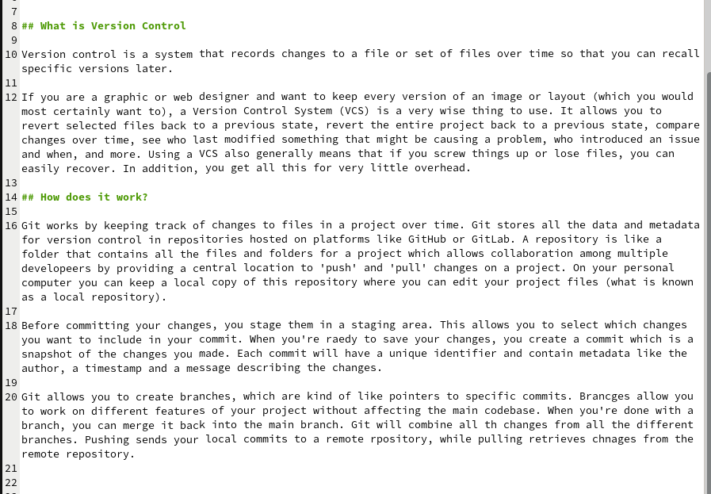
Рис. 13: Редактирование поста об управлении версиями GIT
После сохранения изменении, я отправляю все на github:
Рис. 14: Развертывание сайта
При выполнении данной работы, я освоила размещение посты на сайте по шаблону hugo.